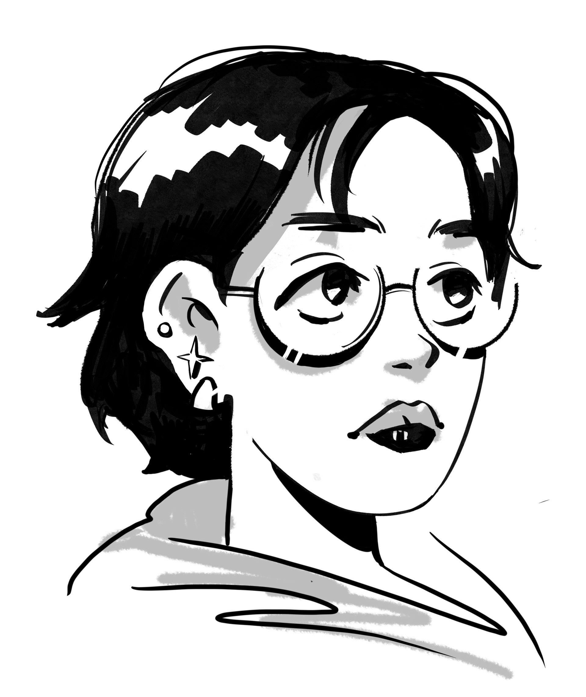

Hello!
I'm Isabel Park, a creative professional focused on visual communication, branding, and design-driven problem solving.
My background is illustration-heavy, but my approach is broader and more applied. I think visually and work best when I can use design to solve problems efficiently and creatively, not just to create standalone visuals. I'm interested in how ideas translate clearly, especially when aesthetics and communication need to work together.
Right now, my goal is to expand my visual design skills into marketing, social media, and branding contexts, where design is used actively within campaigns and practical outcomes rather than existing in isolation.